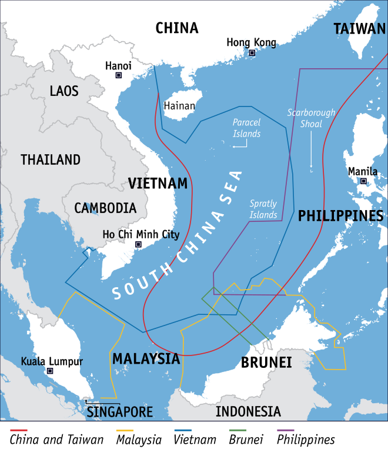

The South China sea is a sea bordered by 4 ASEAN (Association of Southeast Asian Nations) countries, Vietnam, Malaysia, Brunei, and The Philippines. The non-ASEAN countries that border it are The ROC and The PRC. There are currently 57 island bases, Brunei has 1, The ROC has 2, Malaysia has 6, The PRC has 7, The Philippines has 11, and Vietnam has 29. These bases are used to cement the claims of the occupier.
The South China sea is very strategically important for global trade. 25% of all oil passes through it, and so does ⅓ of the world's liquefied natural gas exports, with most of the oil and gas originating from the Persian gulf, a large portion of the oil and gas is bound to Japan and South Korea, states both allied with the US. If The PRC were to gain control of these shipping routes, it could disrupt the supply of these two resources. There are also abundant energy resources in the South China sea, with an estimated 33,864,293,819,663,990,000 litres of oil, and 65,836,800,000,000 cubic metres of natural gas. The island building has been going on for years, primarily between The Philippines and Vietnam, which two claims overlap greatly. Rare earth minerals may also be in The South China sea, primarily used to make electronics, and with East Asia being a hotspot for the manufacturing of electronics, these materials are very useful